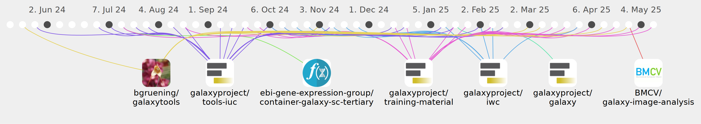

pavanvidem

Commits all-time: 518
Commits last year: 290

(91)
- 1e34dee
- d307800
- 140fb7a
- 06e71e9
- df9c285
- fd148a1
- 3a1b13f
- 44cee2d
- b37248e
- 1eaa542
- 40b45cc
- 3526e63
- 0c519fa
- c44197b
- 04112de
- 4236e39
- 329e9d7
- e9d1fec
- c7704de
- 9be88ad
- 55bc97e
- e886155
- d247e23
- 7179833
- fc03c16
- 4de98de
- e0a651c
- 0bf651c
- 9a531cc
- 0343a4c
- bd992d4
- fe812e7
- 011951c
- 53470b2
- 48b01d4
- 30a636f
- 959a8d1
- 4196c66
- 320fb61
- 0b4f26b
- 953f226
- 6928366
- 3e0781c
- 6862617
- 4502af6
- 442a5ac
- 694404e
- 4ab0cff
- 4666c84
- f72f923
- ed25414
- c9bd186
- 38cb46b
- f41bb8b
- c54f3c2
- 03e8b57
- 531f5fd
- c1d84c1
- 39a8c4d
- ddc5609
- 7fc4538
- 880ac65
- 3df691b
- dda9365
- 699bb63
- 8bcbecd
- 1cb961f
- 725bced
- a4da0ac
- e80259f
- 5a2bc5a
- 08d140f
- 71cdc18
- 1928524
- f00ab89
- 0eebc8f
- 5318430
- dcd6bb5
- ad93b0f
- 8806417
- d5c33b2
- 6a8362d
- 5d053c2
- b3c9a89
- eacb5e9
- fbfc9f2
- 0d27e85
- 423050b
- 1012e54
- 17340c0
- 2bb05b6
(82)
- 1a988cf
- 35f3276
- f9215dc
- 626d119
- b4082f9
- 048f88b
- dd1a9d8
- 29e91d9
- 632d853
- 3df16cd
- 721799b
- 52dfef5
- 28b9c33
- 95942e4
- fb729bc
- c6d4760
- 38df98c
- 7a238a8
- 31839d1
- 0966617
- 73eb051
- f3aaa51
- 319638a
- 3f39c26
- 7b2ea1c
- 4d31571
- dd04f38
- e5350c0
- aa48eae
- 9a3e23f
- 9f8ead8
- 08dd45b
- 3115d21
- 082c57a
- 865c0ef
- bb6c038
- 1b9c706
- d7e53d4
- 0771011
- 8053bc6
- 7e923ac
- e4bb5bf
- 727ff8d
- fadf2eb
- 21768ff
- bdd0bf9
- c056945
- a424cd8
- 7c89957
- 4d628ae
- 7cd6935
- 1212786
- 4f65c05
- 8930c62
- ad0df1e
- 1386a92
- 4bf47c8
- 0549752
- c4c76ef
- 94aaca9
- 1c6bf83
- eb445af
- 6844577
- e37a207
- 0c49c70
- e9c8534
- bcf8e99
- 4921cc1
- da4ecea
- aa31a15
- 6e2a053
- 5df631d
- 610e717
- b23d67b
- 319d76c
- 6a7c841
- b04b673
- ca381b3
- d26cb05
- 9eed6f0
- b07f174
- 19844cd
(74)
- 9740cbb
- 76004ba
- 945d530
- 4bbac78
- 30cf49e
- e2d91a0
- 4868003
- a06935f
- 4fa0457
- 21d02bd
- 99e82dc
- 30dbb34
- 76a51b8
- db800d0
- 6297189
- 94a0545
- 150945c
- 0382ac8
- fc568ae
- 15a43b2
- bc3ba00
- 724ea13
- d5afada
- 9822520
- 1eab6ae
- f197893
- 31462d8
- 888a034
- c2af43f
- 693ff11
- a8f264c
- c967ecb
- b42014f
- 3c15c85
- 6777a27
- 36fcd5e
- e496fbd
- f3a3a06
- b3cab49
- a8b52b9
- 04f18b6
- befd9ce
- 90dd72a
- c5c59d0
- af810d8
- 2a9b5f2
- 15619d4
- 3765383
- b7d486d
- 30803d9
- a929c36
- 14adcfa
- 2a0e6ac
- 63a5101
- 35f1585
- 8432f42
- 6fe72e0
- 4913d46
- 5773800
- 55f0d25
- 0816d11
- a6433f5
- 00551fe
- e74fcb8
- 85b22ba
- d1cfc88
- b9d99b7
- cbfdea4
- 662be53
- 16bc01c
- 1d37983
- b783d0e
- 6cdb6fb
- 1305c06
(40)
- c4aa026
- 6954dde
- fdbd4a8
- 0cfbcd5
- 76a64de
- f1b1458
- 4e5653c
- ce7399d
- 81c6be8
- 8a0dedd
- 3d4ad0c
- bba9624
- bdb1fda
- 596e9ae
- c0d496d
- d49e029
- 5a6c318
- a0ea238
- 2997d09
- 66d4a74
- e1641e1
- 39337d3
- 7fb18de
- 2723029
- e740698
- 8158652
- 6a99f9b
- 24ea036
- 809f1a9
- 9aa967e
- 98d01c3
- 702764f
- 2b9852c
- a3b4807
- 2b4a2c4
- b03947c
- 611ae14
- 46e5e4e
- c9c8288
- 35fcbeb
(1)
(1)
(1)